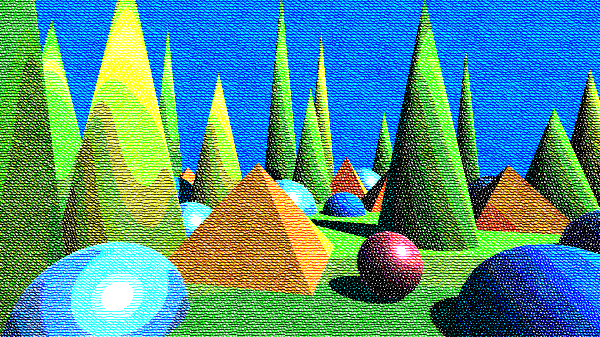

Effects reference: Cross-hatching
Icon Key
Symbols used in the property reference tables throughout these docs.
| Icon | Meaning |
|---|---|
| 🖼️ | Texture field. |
| 🎨 | Color field. |
| 🔢 | Matrix field. |
| 🔑 | Shader keyword. Selecting this property switches the effect's shader between shader_feature variants. See Shader Stripping if you plan to change one of these dynamically at runtime rather than through the Inspector. |
Convex Hull Hatch
Maps each pixel’s color toward a set of primary colors using iterative convex-hull projection, while applying layered cross-hatching to modulate how strongly each primary influences the result. This produces stylized, textured palette mapping that blends palette reduction with drawing-like shading.
Hatching is applied across multiple layers, each rotated according to the selected orientation scheme, allowing effects ranging from classic engraving to organic irregular cross-hatching.
| 🔑 | Property | Range | Description |
|---|---|---|---|
| Layer Count | [1, 10] | Number of hatching layers used to modulate convex-hull projection. More layers increase texture density and color variation. | |
| Background Color | 🎨 | Base reference color used as the starting point for convex-hull projection. | |
| Primary Colors (0–9) | 🎨 | Palette colors that define the convex hull. Each pixel is iteratively projected toward these anchors. | |
| Orientation Scheme | Fixed, Uniform, Golden, Parallel | Determines how hatch angles are rotated across successive layers. | |
| Base Orientation | [0, 180] | Base rotation offset in degrees applied before layer-based orientation. | |
| 🔑 | Use Orientation Map | true / false | When enabled, hatch orientation is sampled from an orientation texture instead of using only the orientation scheme. |
| Orientation Texture | 🖼️ | Texture used to control per-region hatch orientation when Use Orientation Map is enabled. | |
| Hatch Texture | 🖼️ | Tileable line or stipple texture used to modulate convex-hull projection. | |
| Mip Map Bias | [0, 2] | Bias applied to the mip level when sampling the hatch texture. Higher values select coarser mips, softening fine detail at a distance. | |
| Layer Offset | [0, 0.5] | Per-layer UV offset applied to the hatch texture. When locked, Y follows X. | |
| Hatch Strength | [0, 5] | Controls how dark the hatch layers are. | |
| Background Strength | [0, 1] | How much of the original image to show compared to the background color. | |
| 🔑 | Use UV Map | true / false | Enables UV-map–driven sampling of hatch textures instead of screen-space UVs. |
| UV Map | 🖼️ | UV map texture used to drive hatch sampling when Use UV Map is enabled. | |
| 🔑 | Use Depth Compensation | true / false | When using a UV map, compensates for depth so hatch scale appears consistent at different distances. Blends between adjacent depth bands to smooth transitions and reduce popping. |

Tip
- You can render out a UV Map with the
UV Map Rendererfor the built-in pipeline, or the corresponding renderer feature for URP. There are more options for managing the scale.
Mixbox Convex Hull Hatch
Requires Mixbox.
Applies convex-hull palette projection modulated by a hatching texture, but performs all color blending using Mixbox, a perceptually accurate subtractive color model. This produces pigment-like transitions, watercolor and gouache–style layering, and more natural blending than standard linear interpolation.
Hatching is applied across multiple layers, each rotated according to the selected orientation scheme, allowing expressive, drawing-like texture embedded into the palette projection.
If Mixbox is unavailable, the shader outputs a flat yellow fallback.
| 🔑 | Property | Range | Description | |---|--- ---------------------------- | -------------------------------- | ---------------------------------------------------------------------------------------------------------------------------------------- | | | Layer Count | [1, 10] | Number of hatching layers used to modulate the convex-hull palette projection. Higher values increase texture density and layering depth. | | | Background Color | 🎨 | Base reference color used as the starting point for convex-hull projection before Mixbox blending. | | | Primary Colors (0–9) | 🎨 | Palette colors that define the convex hull. Pixels are iteratively blended toward these anchors using Mixbox. | | | Mixbox LUT | 🖼️ | Lookup texture required for Mixbox’s perceptually accurate subtractive color blending. | | | Orientation Scheme | Fixed, Uniform, Golden, Parallel | Determines how hatch angles are rotated across successive layers. | | | Base Orientation | [0, 180] | Base rotation offset in degrees applied before per-layer orientation is added. | | 🔑 | Use Orientation Map | true / false | When enabled, hatch orientation is sampled from an orientation texture instead of using only the orientation scheme. | | | Orientation Texture | 🖼️ | Texture used to control per-region hatch orientation when Use Orientation Map is enabled. | | | Hatch Texture | 🖼️ | Tileable line or stipple texture used to modulate Mixbox convex-hull projection. | | | Mip Map Bias | [0, 2] | Bias applied to the mip level when sampling the hatch texture. Higher values select coarser mips, softening fine detail at a distance. | | | Layer Offset | [0, 0.5] | Per-layer UV offset applied to the hatch texture. When locked, Y follows X. | | | Hatch Strength | [0, 5] | Controls how strongly the hatch pattern influences Mixbox color projection. | | | Background Strength | [0, 1] | Blends between the original pixel color and the background color. | | 🔑 | Use UV Map | true / false | Enables UV-map–driven sampling of the hatch texture instead of screen-space UVs. | | | UV Map | 🖼️ | UV map texture used to drive hatch sampling when Use UV Map is enabled. | | 🔑 | Use Depth Compensation | true / false | When using a UV map, compensates for depth so hatch scale appears consistent at different distances. Blends between adjacent depth bands to reduce popping and discontinuities. |

Tip
- You can render out a UV Map with the
UV Map Rendererfor the built-in pipeline, or the corresponding renderer feature for URP. There are more options for managing the scale.
Simple Hatch
Applies layered cross-hatching based on image brightness. Darker regions receive more hatch layers; bright regions remain mostly untouched. The hatch texture is rotated per layer according to the selected orientation scheme, producing rich, multidirectional hatching styles.
This shader mixes colors using A + B - 1, visually similar to multiplicative blending (A * B) for values in the [0,1] range.
| 🔑 | Property | Range | Description | |---|--- ---------------------------- | -------------------------------- |----------------------------------------------------------------------------------------------------------| | | Layer Count | [1, 10] | Number of hatch layers. Darker areas accumulate more layers. | | | Black Level | [0, 1] | Brightness threshold below which pixels are fully hatched. | | | White Level | [0, 1] | Brightness threshold above which pixels receive no hatching. | | | Orientation Scheme | Fixed, Uniform, Golden, Parallel | Determines how hatch angles are rotated across layers. | | | Base Orientation | [0, 180] | Base rotation in degrees applied before layer-based rotation. | | 🔑 | Use Orientation Map | true / false | When enabled, hatch orientation is sampled from the orientation texture instead of using the base angle. | | | Orientation Texture | 🖼️ | Texture used to control per-region hatch orientation when Use Orientation Map is enabled. | | | Hatch Texture | 🖼️ | The texture used for hatching. Typically a tileable line or stipple pattern. | | | Mip Map Bias | [0, 2] | Bias applied to the mip level when sampling the hatch texture. Higher values select coarser mips, softening fine detail at a distance. | | | Layer Offset | [0, 0.5] | Per-layer UV offset applied to the hatch texture. When locked, Y follows X. | | | Hatch Strength | [0, 5] | Controls the darkness of each hatch layer. | | | Background Strength | [0, 1] | Controls the amount of background tone visible in the background layer. | | | Smoothness | [0, 1] | Blends transitions between hatch layers for smoother tonal changes. | | 🔑 | Use UV Map | On / Off | Enables UV-map–driven sampling of the hatch texture instead of screen-space UVs. | | | UV Map | 🖼️ | UV map texture used to drive hatch sampling when Use UV Map is enabled. | | 🔑 | Use Depth Compensation | On / Off | When using a UV map, compensates for depth so hatch scale appears consistent at different distances. Blends between adjacent depth bands to smooth transitions and reduce popping. |

Tip
- You can render out a UV Map with the
UV Map Rendererfor the built-in pipeline, or the corresponding renderer feature for URP. There are more options for managing the scale.